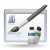

LXDE
Das Projekt LXDE hat sich zum Ziel gesetzt, eine einfache, schnelle und energiesparende Desktop-Umgebung vor allem auch für ältere Hardware zu schaffen. Hierbei existieren, anders als bei GNOME oder KDE, relativ wenige Abhängigkeiten zwischen den einzelnen Komponenten bzw. Programmen. Als Fenstermanager wird Openbox verwendet.
Während andere Desktop-Umgebungen in der Regel eine Reihe von Anwendungen wie beispielsweise Firefox, LibreOffice oder einen Netzwerk-Manager mitinstallieren, ist das bei LXDE nicht der Fall. Bei einer Installation in ein bestehendes System können viele der bereits installierten Programme weiterverwendet werden. Zusätzlich benötigte oder gewünschte Anwendungen müssen selbst nachinstalliert werden.
Seit 2009 gibt es Ubuntu mit LXDE als Desktop-Umgebung in einer eigenen (damals inoffiziellen) Version:  Lubuntu. Die Anerkennung durch Canonical als offizielle Ubuntu-Variante erfolgte im Mai 2011, offizielle Installationsmedien sind ab Lubuntu 11.10 verfügbar. Als eigene Distribution umfasst Lubuntu natürlich eine komplette Programmauswahl. Vorinstalliert sind z.B. Firefox oder Chromium als Webbrowser oder der Netzwerk-Manager. Bilder findet man in der Galerie oder hier.
Lubuntu. Die Anerkennung durch Canonical als offizielle Ubuntu-Variante erfolgte im Mai 2011, offizielle Installationsmedien sind ab Lubuntu 11.10 verfügbar. Als eigene Distribution umfasst Lubuntu natürlich eine komplette Programmauswahl. Vorinstalliert sind z.B. Firefox oder Chromium als Webbrowser oder der Netzwerk-Manager. Bilder findet man in der Galerie oder hier.
LXDE ist nicht der einzige Weg zu einer leichtgewichtigen Desktop-Umgebung. Alternativen werden in den Artikeln Eigene Desktopumgebung und Alte Hardware vorgestellt.
Der Nachfolger soll LXQt als Portierung von LXDE auf die Grafikbibliothek Qt werden.
Allgemeines¶

Geschichte - Geschichte von LXDE und Lubuntu
Lubuntu - mehr Details und Unterschiede zu LXDE
LXDE Webseiten - LXDE und Lubuntu im Internet
Installation¶

Installation - Installationsvarianten
LXDE deinstallieren - Ursprungszustand wiederherstellen/Deinstallation
Verwendung¶

Grundlagen - Basisartikel für den Umgang mit LXDE
Einstellungen - Einstellungen am System vornehmen
LXAppearance - Erscheinungsbild anpassen
LXPanel - Standardleiste einrichten
LXDE Fenstermanager wechseln - Transparenz- und Schatteneffekte unter LXDE
Openbox - der Standard-Fenstermanager
LXShortcut - Anwendungsstarter erstellen
xfce4-power-manager - Energieverwaltung
Benutzer & Gruppen - Benutzerverwaltung
Programme¶
LXDE¶
PCManFM - Dateimanager
GPicview - Bildbetrachter
Leafpad - Editor
LXLauncher - Anwendungsstarter
LXMusic - Audioplayer
LXTask - Taskmanager
LXTerminal - Terminalemulator
Siehe auch LXDE Programme.
 Übersichtsartikel
Übersichtsartikel- Erstellt mit Inyoka
-
 2004 – 2017 ubuntuusers.de • Einige Rechte vorbehalten
2004 – 2017 ubuntuusers.de • Einige Rechte vorbehalten
Lizenz • Kontakt • Datenschutz • Impressum • Serverstatus -
Serverhousing gespendet von